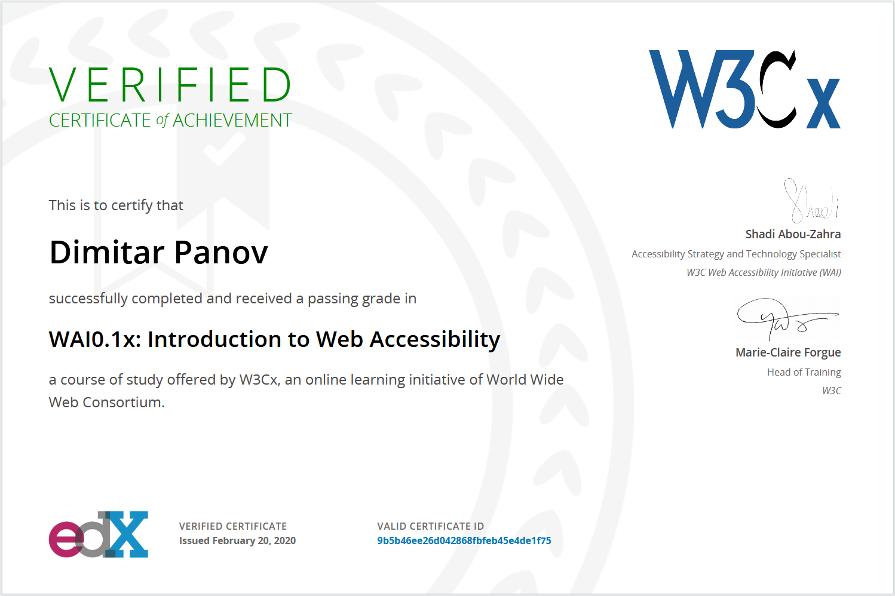

DevUnit / DConsult -
Senior Front End DeveloperDevUnit is a boutique software development agency, where I worked on a variety of big and small projects both as a front end and as a back end developer.
I have experience with front-end and back-end development, web performance, accessibility and design. I also have appreciation of good design and typography and I'm currently attending a UX/UI upskill course at Telerik Academy.
DevUnit is a boutique software development agency, where I worked on a variety of big and small projects both as a front end and as a back end developer.
One of my weekend projects. Infograf is an online media that focuses on data and data visualization. I've worked on the website design and development. Unfortunately, nowadays I don't have the time to give it the love it deserves.
Another one of my weekend projects. Varianto:25 sells cool merchandise for developers.
Telerik develops powerful .NET and JS components for developers. I lead a team of front end devs that worked together with the marketing and design departments to develop and maintain the company's websites.
I also worked in the Sitefinity CMS team for a while, mainly on the Feather project. Here's a pull request list with my contributions.
Viscomp is a Bulgarian subsidiary of Euroweb - a German company that specializes mainly in websites for SMEs.
I've worked as a front end dev on hundreds of small-sized websites for SMEs, collaborating daily with designers based in Germany.
I have very fond memories with making things work properly on IE6, especially transparent PNGs.
Here are the skills and technologies that I feel comfortable working with:
And some other tools and technologies that I've worked with over the last 10 years (in no particular order):
I've always been very keen on writing accessible code and recently I successfully finished the new W3C WAI0.1x: Introduction to Web Accessibility course on edX.
